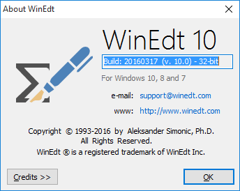

Support
Your first reference for installing, operating and basic troubleshooting issues in WinEdt should be the QuickGuide.
WinEdt's built-in Help is also a valuable resource in seeking support. The Help manual reflects WinEdt's current functionality and is complemented by the topic-specific help available through the associated wizards and dialogs. In particular, WinEdt's Configuration Wizard and Execution Modes Dialog (both in the Options Menu) may very well guide you in resolving your problem! Also, consider carefully whether the problem is actually WinEdt-related and not a purely TeX question, in which case it should be posted to the appropriate forum such as the TeX Newsgroup. If after consulting the relevant documentation you are still unable to resolve a WinEdt-related issue, consider posting the problem on WinEdt's Mailing List (see below). As a last resort you can send a support request to support@winedt.com; however, you will have to be patient because we have to deal with many such questions every day and sometimes it is impossible to keep up with the flow.
If you believe that you have stumbled upon a "bug" in WinEdt please describe in detail how to reproduce the problem and include as many details concerning your deviation from the default settings as possible. This way the bug can be isolated and fixed without extensive and time-consuming correspondence and days of frustrating experiments while trying to reproduce a problem on our side. Users often report as a "bug" an option in the default settings that is not set to their liking; this can be easily customized on user's part and remember: one user's bug another one's feature!
WinEdt's Mailing List
A good resource for information and assistance is WinEdt's Mailing List. You do not have to be a registered user (and, if you are, you certainly should never quote your registration) to participate in the List. While the list is not moderated and some users find the traffic overwhelming, it is easy to subscribe and even easier to un-subscribe:
To subscribe, send an empty message to winedt+list-subscribe@wsg.net
To unsubscribe, send an empty message to winedt+list-unsubscribe@wsg.net
To post a (hopefully non-empty) message to the list, address it to winedt+list@wsg.net
To get an index with subject and author for recent messages, mail: winedt+list-index@wsg.net
Make sure that the return address in your e-mail is correct. On subscribing you will be sent instructions on how to remove yourself from the list, should you so wish. Read them carefully and avoid embarrassment caused by sending the unsubscribe requests to the forum and thus addressing a few hundred members with your request...
Topics discussed on the Mailing List should concern WinEdt. However, an occasional posting concerning TeX or other remotely related issue is an acceptable practice. If you are posting an off-topic message (non-WinEdt related) it helps if you say so before stating your question. This may spare you from being reminded that this does not strictly belong to WinEdt's Mailing List. Helpful hints and answers to typesetting problems have been given on this list in the past...
When you are asking for help you should mention the version and build of your instance of WinEdt as displayed in WinEdt's Help/About WinEdt Dialog.
Build: yyyymmdd (v. X.x) is the relevant information uniquely identifying your version of WinEdt (note that the build indicates the "year-month-day" format of the date when this instance of WinEdt was compiled):

You should also describe your problem in details including your Windows and (when relevant) your TeX System. You are more likely to receive a good advice if you provide the relevant information. Finally, avoid misrepresenting the situation: think twice if the error is reported by WinEdt or by TeX. Most errors about missing or misplaced sty or bib files or unknown graphics formats are reported by the compiler and not by WinEdt.
When writing to the Mailing List you should avoid sending attachments (screen-shots or other large [graphics] files). They are generally not appreciated and tend to be irrelevant to the problem you are experiencing. If you are in doubt whether or not to send your query to the Mailing List you can write privately to support@winedt.com and we'll advise you on the matter.
If you are going away from your office and you are about to set up the auto-responder for your email account (a list subscriber) make sure that you first (temporarily) un-subscribe from the mailing list. If your responder generates messages back to the mailing list this can cause a never ending stream of messages and is bound to make many users (very, very) angry!
Sending spam messages (you know what they are) to the Mailing List is strictly forbidden!!! Exercise common sense when you are sending messages: the list is not moderated; we assume that TeX and WinEdt audience is capable of civilized and intelligent behavior.
Postings on WinEdt's Mailing List are also archived on gmane.org and Yahoo:
http://news.gmane.org/gmane.editors.winedt
http://groups.yahoo.com/group/WinEdt
You don't have to subscribe to the mailing list to search through old threads and messages and see if your questions have already been discussed and answered. Note that the Yahoo!!! group is there only for archive purposes. You should not subscribe or send messages directly to the Yahoo archive group. WinEdt's Mailing List continues to be run as before with the addition of messages being archived at the above URL for convenient search. This service is free but as a result you'll have to put up with a few banners and advertising...